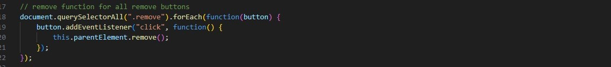
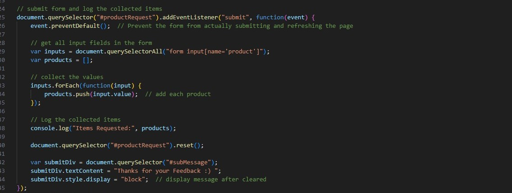

When "Request More!" button is selected
First p tag of the form is duplicated AKA where the user inputs the request
The new input box is placed above the buttons and below the original input
Remove function is added to new input
The remove button is given the function to remove its parent element AKA the input
On submit:
This form does not send but logs
Product input values are collected, and logged as "Items Requested:"
The form is cleared and the message "Thanks For your Feedback" is shown